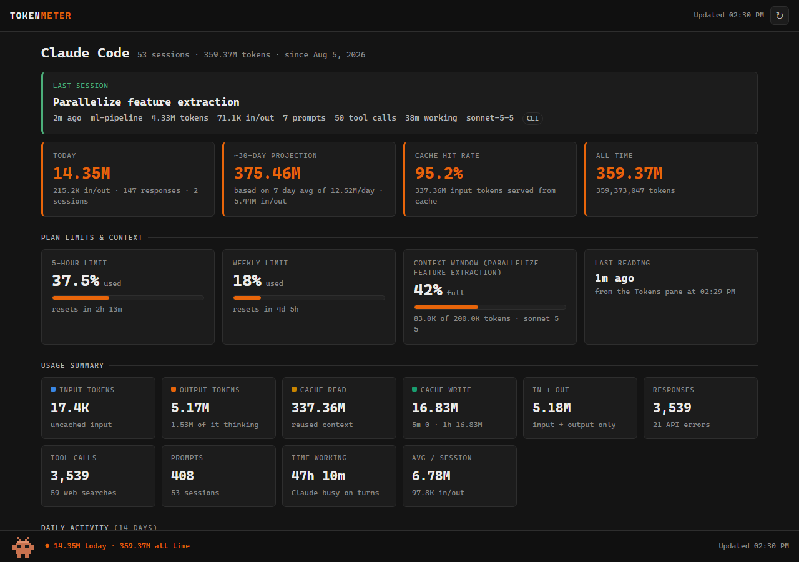

Claude Code plugin
·
open source
TOKEN
METER
See where your Claude Code tokens go.
A live pane in every session and a local dashboard: tokens, plan limits, context fill and history.
Live in-session pane
Plan limits
100% local
